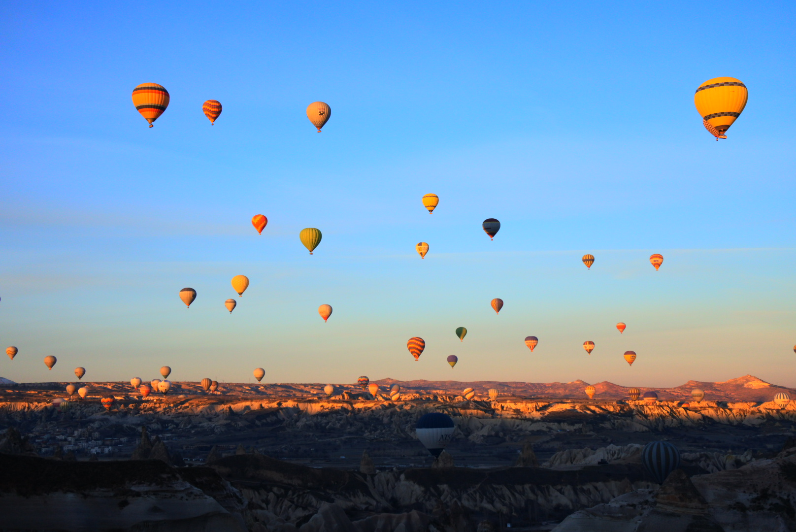
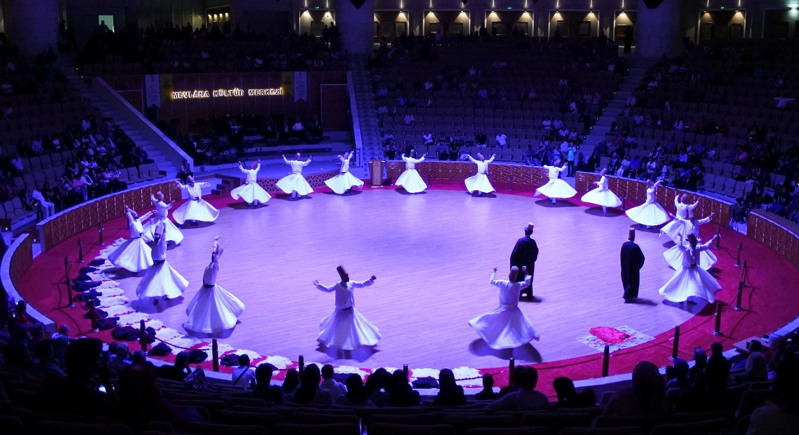
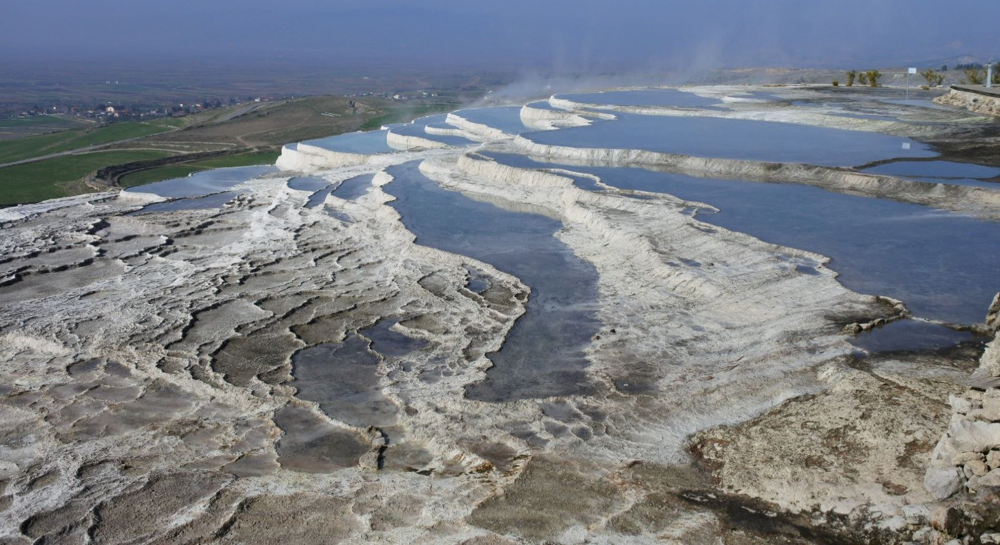

ビザンツ帝国、オスマン帝国の首都として栄えた歴史を持つトルコ最大の都市
| 基本情報 | |
|---|---|
| 首 都 | アンカラ |
| 言 語 | トルコ語 |
| 通 貨 | トルコリラ(TR) 1TR=約17円 |
| 宗 教 | イスラム教 |
| アクセス | 日本からイスタンブルへの直行便あり約13時間 |
イスタンブル

ブルーモスクの別名で有名なスルタンアフメトジャーミィ
アヤソフィア大聖堂
アヤソフィア大聖堂内部
イスタンブル地下宮殿
| 基本情報 | |
|---|---|
| アクセス | 日本から飛行機で13時間 |
| 料 金 | ブルーモスク : 無料 アヤソフィア大聖堂 : 100TL(約1700円) イスタンブル地下宮殿 : 20TL(約340円) |
| その他 | ブルーモスク周辺には親日家を名乗り日本人をターゲットにする 悪質な客引きがいるので注意しよう |
カッパドキア
雨風により浸食された石灰岩が作り出す景色はまるで異世界のよう
近郊にはキリスト教によって掘られた地下都市もある
近郊にはキリスト教によって掘られた地下都市もある

カッパドキア定番の気球ツアー
カッパドキアの奇岩群
ラクダ岩
デリンクユの地下都市
カッパドキア各地に点在するキノコ岩
| 基本情報 | |
|---|---|
| アクセス | イスタンブルからバスで10～12時間 |
| 料 金 | 気球ツアーはどの会社も15000円ほど カッパドキアの見どころを巡るツアーは約5000円, ツアー会社により見学箇所が違うので要確忍 |
| その他 | 天候によって1週間以上気球が飛ばない場合もある |
エフェス
古代ギリシア人により作られた港湾都市、保存状態が良く当時の人々の暮らしを今に伝える
近くには聖母マリアの終の住みかとされる「聖母マリアの家」がある
近くには聖母マリアの終の住みかとされる「聖母マリアの家」がある
ケルケス図書館
トラヤヌスの泉
ハドリアヌス神殿
巨大な円形劇場は今もイベントで使用されている
聖母マリアの家、毎年バチカンから使者が訪れている
| 基本情報 | |
|---|---|
| アクセス | イズミルからセルチュクまでバスで1時間 セルチュクから遺跡までバスで5分ほど 徒歩であれば20分 |
| 料 金 | エフェス遺跡 : 100TL(約1700円) 聖母マリアの家 : 45TL(約750円) |
コンヤ
コンヤ発祥のイスラム教神秘主義教団、メヴラーナ
彼らの宗教儀式の旋舞「セマー」、メヴラーナ博物館など一見の価値あり
彼らの宗教儀式の旋舞「セマー」、メヴラーナ博物館など一見の価値あり
メヴラーナ博物館とセリムモスク

メヴラーナの円舞「セマー」
| 基本情報 | |
|---|---|
| アクセス | イスタンブルから飛行機で80分 アンカラからバスで4時間 |
| 観 光 | 毎週土曜日メヴラーナカルチャーセンターにてセマーを無料で公開 |
パムッカレ
「パムッカレ」とは綿の城を意味し、石灰棚を登り切った先にはヒエラポリス遺跡がある

温泉が上段から流れている
石灰華段丘
ヒエラポリス遺跡の円形劇場
| 基本情報 | |
|---|---|
| アクセス | デニズリからバスで約20分 |
| 料 金 | 石灰棚とヒエラポリス遺跡の入場券は共通で50TL(約800円) |
| その他 | 石灰棚の保護のため石灰棚内では靴を脱がなければならない、袋などがあると便利 |
マルディン
急斜面にある旧市街は複雑で迷路のよう
迷って疲れ果てないように
迷って疲れ果てないように
マルディン旧市街
旧市街の路地
カシミエ神学校
| 基本情報 | |
|---|---|
| アクセス | シャンルウルファからバスで4時間 ガズィアンテプからバスで6時間 |
| 料 金 | 基本的に入場料のかかる施設などはない |
| 注意点 | 市街地の内部は迷路のように入り組んでおり 急な階段も多いため動きやすい服装と事前の準備が必要 |